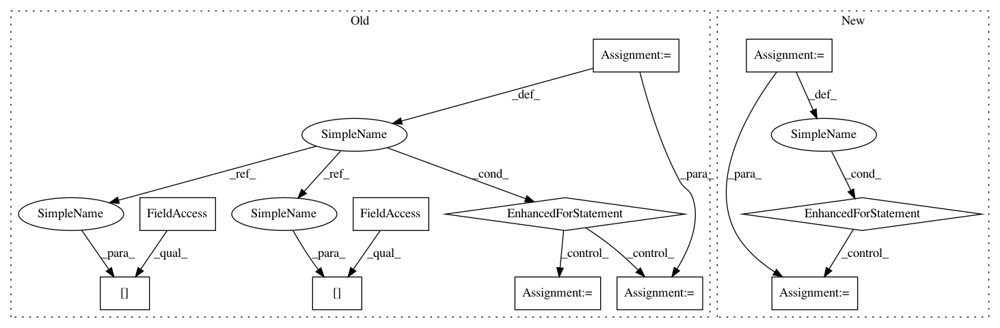

6e6c12425a787d8c954ce5c31ceed59cdd531001,kraken/lib/ctc_decoder.py,,greedy_decoder,#,48
Before Change
m = np.argmax(outputs, 0)
start = None
x = []
for i in range(len(m)):
if start is None and dec[i] != 0 and (not (i > 0 and dec[i-1] == dec[i])):
start = i
code = dec[i]
if start is not None and (dec[i-1] != dec[i]):
x.append((code, start, i , val[start:i+1].max().data[-1]))
start = None
return x
def blank_threshold_decoder(outputs, threshold=0.5):
After Change
seq_len = outputs.shape[1]
mask = np.eye(outputs.shape[0], dtype="bool")[labels].T
classes = []
for label, group in groupby(zip(np.arange(seq_len), labels, outputs[mask]), key=lambda x: x[1]):
group = list(group)
if label != 0:
classes.append((label, group[0][0], group[-1][0], max(x[2] for x in group)))
return classes
def blank_threshold_decoder(outputs, threshold=0.5):
In pattern: SUPERPATTERN
Frequency: 3
Non-data size: 11
Instances
Project Name: mittagessen/kraken
Commit Name: 6e6c12425a787d8c954ce5c31ceed59cdd531001
Time: 2018-05-20
Author: mittagessen@l.unchti.me
File Name: kraken/lib/ctc_decoder.py
Class Name:
Method Name: greedy_decoder
Project Name: mittagessen/kraken
Commit Name: 6e6c12425a787d8c954ce5c31ceed59cdd531001
Time: 2018-05-20
Author: mittagessen@l.unchti.me
File Name: kraken/lib/ctc_decoder.py
Class Name:
Method Name: greedy_decoder
Project Name: stratosphereips/StratosphereLinuxIPS
Commit Name: bfff0cb09ae56b722c03f014337346c3a095abea
Time: 2019-04-02
Author: eldraco@gmail.com
File Name: slips.py
Class Name:
Method Name:
Project Name: eriklindernoren/PyTorch-GAN
Commit Name: 3311e8b916b1ca8dd7edf4962bcf749234b7eb4f
Time: 2018-05-03
Author: eriklindernoren@gmail.com
File Name: implementations/stargan/stargan.py
Class Name:
Method Name: sample_images